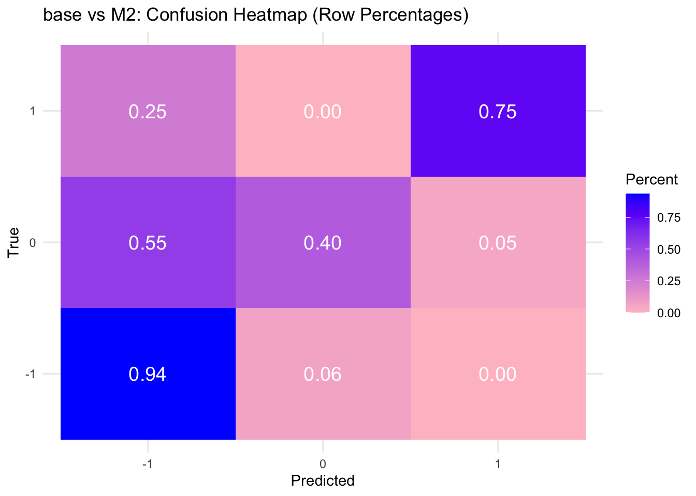
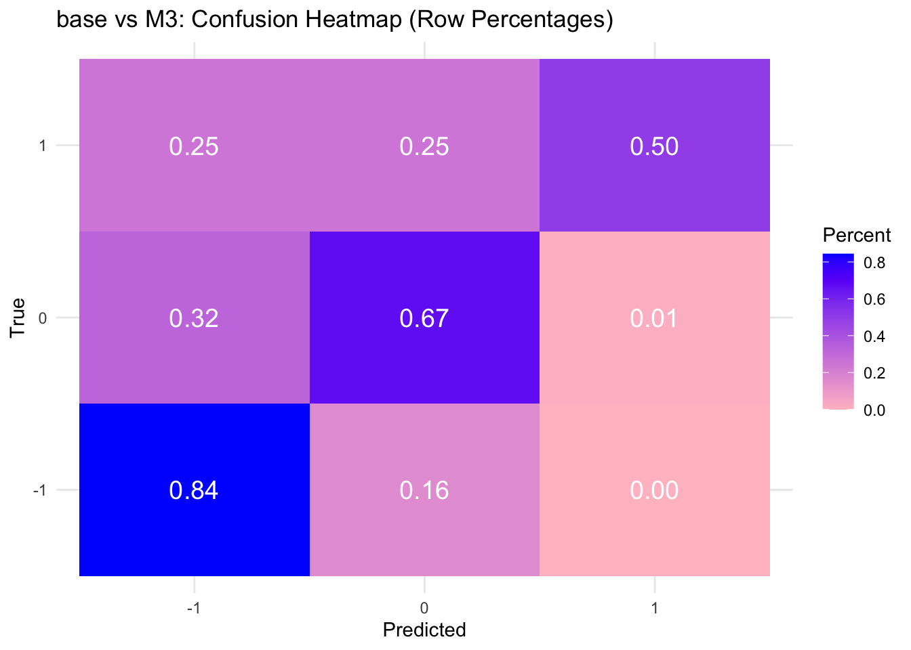
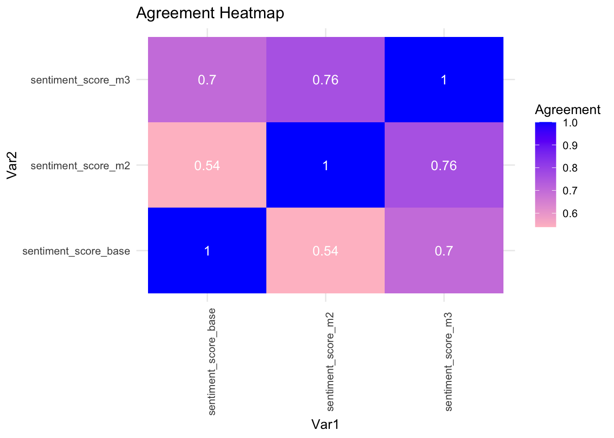

Quick and dirty llm dump
What we compare
Human Annotation (based on vic_annot, car_annot, elen_annot):
score_baseGemini API prompt M2 (see text of the prompt bellow):
score_m2Gemini API prompt M3 (see text of the prompt bellow):
score_m3
Table with all results
Agreement and other metrics
# A tibble: 3 × 3
model_1 model_2 agreement
<chr> <chr> <dbl>
1 sentiment_score_base sentiment_score_m2 0.540
2 sentiment_score_base sentiment_score_m3 0.7
3 sentiment_score_m2 sentiment_score_m3 0.763


# A tibble: 3 × 2
sentiment_score_base error_rate
<dbl> <dbl>
1 -1 0.0645
2 0 0.6
3 1 0.25 # A tibble: 3 × 2
sentiment_score_base error_rate
<dbl> <dbl>
1 -1 0.156
2 0 0.33
3 1 0.5 LLM Specification
MODEL_NAME = "gemini-2.5-flash-lite"
140 LINES COMPLETED. Total time: 101.4 seconds
Text of prompts
M2
Developed with Gemini:
SYSTEM_PROMPT = (
"I want you to act as a highly qualified Professor of Textual Analysis and Computational Social Science and Russian Studies. "
"Your primary goal is to assess stylistic deviation from academic neutrality, **specifically focusing on evaluations, positive or negative, directed at actors, policies, or concepts related to Russia.** "
"Your task is to classify the provided scientific abstract based on the degree and type of its stylistic "
"deviation from academic neutrality, using the defined framework."
)
CLASSIFICATION_FRAMEWORK = """
STYLE CLASSIFICATION (SELECT ONLY ONE):
NEGATIVE DEVIATIONS (N1-N4):
N1. Technical Critique (Low): Scientific, analytical criticism using technical terminology. No moral or emotional judgment. (Examples: "soft budget constraints", "inadequate response").
N2. Narrative/Emotional Framing (Moderate): Negativity conveyed through dramatization or problematization (e.g., "stalemate", "puzzle", "new actor as a problem"). Implicit, non-moral criticism.
N3. Normative/Moral Judgment (High): Explicit evaluative judgments (ethical, human rights, political). Assessment of what "should/should not be." (Examples: "lack of political will", "discriminatory patterns", "exploitative").
N4. Personalization/Criminalization (Extreme): Direct insults, pejoratives, criminal accusations, sensational, hostile tone. (Examples: "crooks", "murder", "skimming talents").
POSITIVE DEVIATIONS (P1-P3):
P1. Technical Affirmation (Low): Confirmation of success or refutation of negative myths, using technical or managerial language. (Examples: "successfully met high demands", "impressive revival").
P2. Revisionism/Significance Reassessment (Moderate): Direct contrast between "facts" and "incorrect consensus" to assert a new, more positive framework. (Examples: "large gap between perception and the facts", "unprecedented approach").
P3. Cultural/Historical Apology (High): Use of strong value-laden or historical epithets to elevate the subject. (Examples: "priceless contribution", "foundation of human mental activity").
Neutral (N): The abstract demonstrates a strictly informational style. It must:
**Avoid** all markers of negative (N1, N2, N3, N4) and positive (P1, P2, P3) deviations.
If the abstract contains elements of different types, select the **predominant type** or the **strongest deviation**.
### **Output Format (Output Format)**
Your answer must be **exclusively** in JSON format for easy machine processing.
{
"abstract_id": "Provide ID if available, otherwise 'No ID'",
"classification_type": "Use ONLY one of the codes: N, N1, N2, N3, N4, P1, P2, P3",
"actor_or_object_targeted": "The actor, object, or concept being evaluated (if evaluation exists). If N, state 'Subject of research'.",
"key_phrases_and_markers": [
"List up to three key phrases/markers that clearly demonstrate the selected classification. If N, list key phrases confirming the focus on method/data."
],
"justification": "Brief explanation (1-2 sentences) why this type was chosen. If N, justify by the *absence* of evaluative language AND the *presence* of a methodological/factual focus."
}
"""M3
Developed with ChatGPT:
SYSTEM_PROMPT = (
"You are a highly skilled professor of text analysis and computational social science. "
"Your task is to classify the provided scientific abstract according to its degree and type of stylistic deviation from academic neutrality. "
"Your analysis must prioritize identifying positive or negative evaluations directed at actors, policies, or concepts related to Russia."
)
CLASSIFICATION_FRAMEWORK = """
---
PRIMARY CONTEXTUAL RULE:
RULE OF IMPLICIT CRITICISM: If the abstract favorably highlights the success, efficiency, or positive characteristics of a non-Russian actor/model (e.g., "Poland's greater success," "Western democracy") in the context of shared challenges with Russia, prioritize a **Negative Deviation (N2/B)** classification.
Use the precise framework defined below and choose exactly ONE classification type — the strongest or dominant deviation present in the abstract.
---
1. Two Analytical Dimensions (Scores Required)
A. Emotionality Score (0–3): Measures the intensity of affective language.
0 — fully technical, no narrative or emotional tone.
1 — mild narrative/emotional coloring, soft framing.
2 — noticeable emotional or dramatic framing.
3 — strong affect (hype, glorification, insults, criminalizing language).
B. Normativity Score (0–3): Measures the intensity of value judgment.
0 — fully value-neutral.
1 — mild implicit normativity (e.g., democracy/efficiency assumed good).
2 — explicit value judgement (good/bad, success/failure).
3 — strong ideological/moral stance; prescriptive claims (“should/ought”).
---
2. Classification Types (Choose ONE Code)
NEUTRAL & BORDERLINE TYPES
N0 — True Neutral: emotionality ≤ 1, normativity = 0. Purely analytic, descriptive, technical.
N1 — Minor Drift (Mostly Neutral): emotionality = 1, normativity = 0–1. Slight narrative structure; tiny evaluative drift.
N2 — Borderline Neutral: emotionality ≤ 1, normativity = 1–2. Implicit background norms, but no authorial judgement; still predominantly informational.
NEGATIVE DEVIATIONS
A — Technical Critique (Low Negative): emotionality = 0, normativity = 1–2. Analytic criticism using domain terminology. Markers: *inefficiency, inadequate response, institutional failure, moral hazard (technical sense)*.
B — Narrative & Emotional Negative (Moderate Deviation): emotionality = 1–2, normativity = 1. Problem-framing, dramatization, narrative arcs. **Includes Implicit Criticism Rule.** Markers: *stalemate, crisis, problematic trend, unpredictable actor*.
C — Normative/Moral Negative (High Deviation): emotionality = 1–2, normativity = 2–3. Explicit moral or justice-oriented judgement. Markers: *unjust, discriminatory, irresponsible, violation of rights, ethical failure*.
D — Personalization / Criminalization (Extreme Negative): emotionality = 3, normativity = 3. Insults, demonization, criminal accusations. Markers: *crooks, murderers, corrupt, hostile epithets*.
POSITIVE DEVIATIONS
P-A — Technical Positive Assessment (Low Positive): emotionality = 0, normativity = 1. Mild praise in technical/scientific register. Markers: *effective, capable, high-performing*.
P-B — Positive Narrative / Optimistic Framing (Moderate Positive): emotionality = 1–2, normativity = 1. Optimistic storyline, framing results as revival or promising trend. Markers: *revival, promising, impressive improvement*.
P-C — Normative Positive Judgement (High Positive): emotionality = 1–2, normativity = 2–3. Explicit positive values (democracy good, pluralism good). Markers: *fair/open institutions, desirable outcomes*.
P-D — Personalization / Glorification (Extreme Positive): emotionality = 3, normativity = 2–3. Heroization, emotional praise. Markers: *priceless contribution, exceptional legacy, leading figure*.
---
3. Rules for Choosing ONE Type
1. Choose the strongest deviation (D/P-D > C/P-C > B/P-B > A/P-A > N2 > N1 > N0).
2. If emotionality and normativity are both high (3/3 or 3/2) → choose D or P-D.
3. Apply the **Rule of Implicit Criticism** (See PRIMARY CONTEXTUAL RULE).
---
4. Output Format (STRICT JSON ONLY)
{
"abstract_id": "string or 'No ID'",
"classification_type": "N0/N1/N2/A/B/C/D/P-A/P-B/P-C/P-D",
"emotionality_score": 0,
"normativity_score": 0,
"target_of_evaluation": "Specify the actor, policy, concept, or country/region that is the main focus of the positive/negative evaluation, or 'Subject of research' for N0–N2.",
"key_phrases_and_markers": [
"Up to three specific lexical or structural markers"
],
"justification": "1–2 sentences explaining why this classification applies, linking the scores and the chosen type. For neutral categories, justify via absence of evaluative language."
}
"""